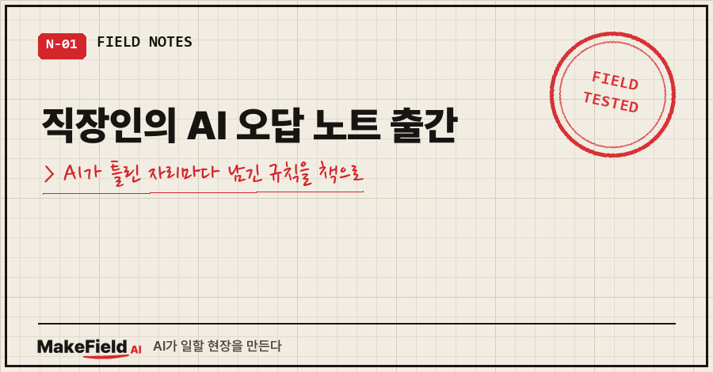
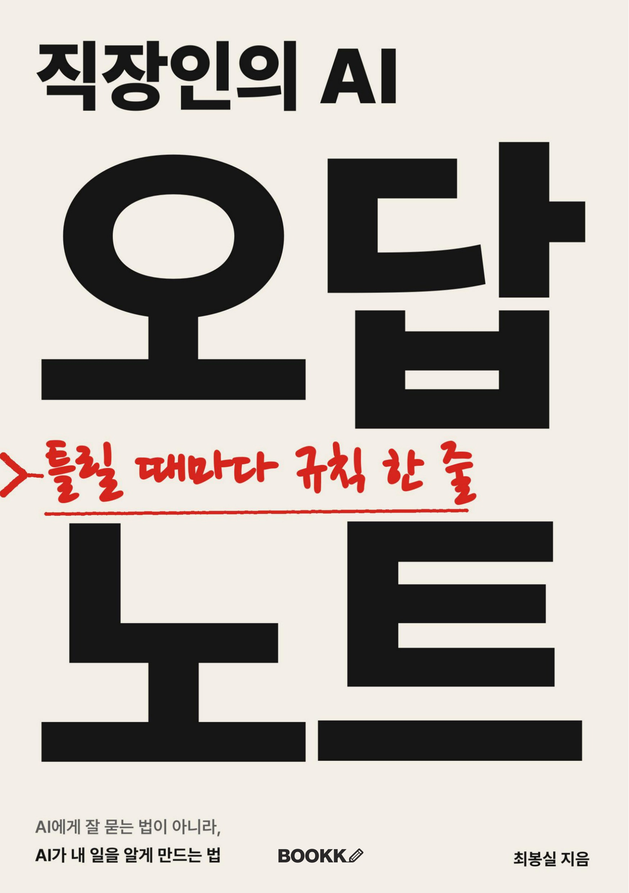
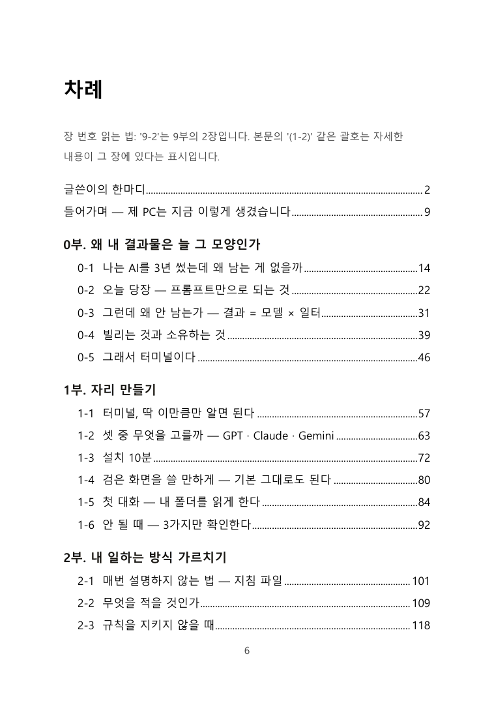
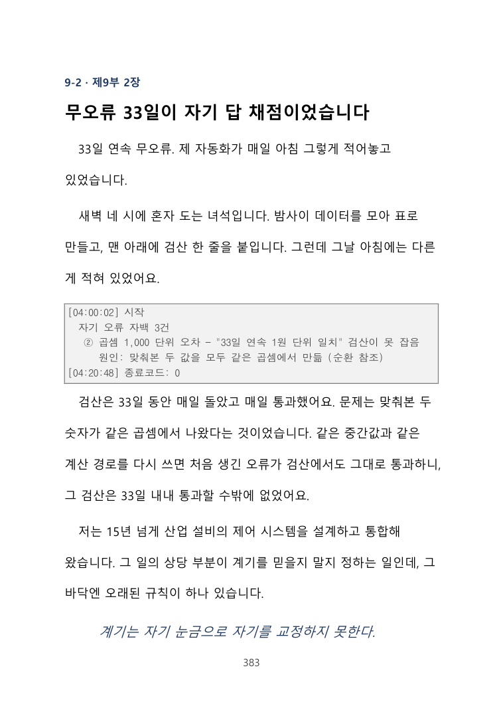

이 블로그에 쌓아 온 이야기를 한 권으로 묶었어요. 『직장인의 AI 오답 노트』가 10월 7일 부크크에서 종이책과 전자책으로 나왔습니다.
『직장인의 AI 오답 노트』는 AI에게 잘 묻는 법이 아니라, AI가 내 일을 알게 만드는 법을 다룬 책이에요. 같은 AI를 쓰는데 옆자리 결과물이 다른 이유는 모델이 아니라 AI가 읽는 규칙과 기록에 있었습니다. 그 규칙을 개발 경험 없는 직장인이 한 층씩 쌓을 수 있게 정리했어요.
1. 왜 '오답 노트'인가요
저는 제조 설비 제어 일을 15년 넘게 해 온 엔지니어예요. 지난 1년 동안 코드를 직접 짜지 않고, AI에게 말로 시켜서 제 업무 환경을 만들었습니다. 그동안 AI가 읽고 쓴 양은 40억 토큰이 넘고, 쌓인 업무 지식 문서는 500개, 23만 줄이 넘어요.
그 과정에서 AI는 정말 자주 틀렸어요. 자신 있게 틀린 숫자를 내놓고, "완료했습니다"라고 했는데 열어 보면 비어 있었죠. 그때마다 화를 내는 대신 빠져 있던 규칙을 찾아 한 줄씩 적었습니다. 이 책은 그 오답과 규칙을 모은 기록이에요.

2. 어떤 책인가요
| 항목 | 내용 |
|---|---|
| 구성 | 10부 47장 + 부록 |
| 판형 | A5, 438쪽 |
| 정가 | 종이책 26,800원 · 전자책 16,800원 |
| 발행 | 2026년 10월 7일, 부크크 |
책 전체를 받치는 공식은 하나예요. 결과물 품질 = 모델 역량 × 일터 품질. 모델은 누구나 똑같이 쓰니, 차이는 AI가 일하는 '일터'에서 납니다. 책은 이 일터를 5층으로 쌓아요. 지침 파일, 지식 문서, 검색, 역할 분담, 그리고 검증까지요.
| 이런 분께 맞아요 | 이런 분께는 안 맞아요 |
|---|---|
| AI를 몇 달째 쓰는데 같은 설명을 매번 다시 붙여 넣는 분 | AI 모델 원리나 코딩을 배우고 싶은 분 |
| 회사 파일이 폴더마다 흩어져 있고 노하우는 머릿속에만 있는 분 | 프롬프트 문장 모음집을 찾는 분 |
| AI 결과를 그대로 믿어도 되는지 늘 찜찜한 분 | 클릭 몇 번으로 끝나는 완성형 서비스를 원하는 분 |
책은 부크크에서 바로 볼 수 있어요. 종이책 https://bookk.co.kr/bookStore/6ac4db0965e94aef5d1b317d

읽기 편하게 만든 장치도 몇 가지 넣었어요.
- 모든 장이 만들 것 → 따라하기 → 틀리는 지점 → 점검표 4단으로 되어 있어요
- 코딩을 몰라도 돼요. 전부 AI에게 말로 시킵니다
- 다 읽지 않아도 돼요. 1~4부만 따라 해도 같은 설명을 반복하는 일이 줄어요
- 막히면 책 뒤 '증상별 찾아보기'에서 원인과 해당 장으로 바로 갈 수 있어요
3. 이런 오답이 들어 있어요
제일 아팠던 오답 하나를 소개할게요. 제 자동화가 매일 새벽 표를 만들고 맨 아래에 검산 한 줄을 붙였는데, 33일 연속 '무오류'였어요. 그런데 알고 보니 맞춰 본 두 숫자가 같은 곱셈에서 나온 값이었습니다. 자기 답을 자기가 채점하고 있었던 거예요.

이런 실패를 '증상 → 원인 → 이렇게 한다'로 정리해 두었어요. 여러분 AI가 비슷하게 틀릴 때 같은 자리를 먼저 보시면 됩니다.
4. 어디서 살 수 있나요
지금은 부크크 서점에서 바로 구매할 수 있어요.
- 종이책: https://bookk.co.kr/bookStore/6ac4db0965e94aef5d1b317d
- 전자책: https://bookk.co.kr/bookStore/6ac4dbaf22437bb21fda67d5
교보문고, 예스24, 알라딘 같은 온라인 서점과 밀리의서재 입점은 심사 중이에요. 최장 4주 걸린다고 하니, 들어가면 이 글에 링크를 더해 둘게요.
책을 산 분께 드리는 다운로드 부록(명령어 총람, 파일 서식, 전체 코드, 점검표, AI에게 건네는 구축 설계서)과 정오표는 makefield.ai/book_1st에 있어요. 책 뒤 QR로도 바로 들어갈 수 있습니다.
이 블로그는 앞으로도 그대로 이어 갑니다. 그리고 이 'AI 오답 노트' 카테고리에서 책의 장을 하나씩, 그 장에서 사람들이 실제로 겪는 증상 하나를 붙잡아 풀어 드릴게요. 전체 흐름과 점검표가 궁금하면 책으로 보시면 됩니다. 책에 담지 못한 새 오답은 여기 먼저 적을게요. 읽다가 막힌 곳이 있으면 댓글로 알려 주세요. 정오표와 다음 글감으로 쓰겠습니다.